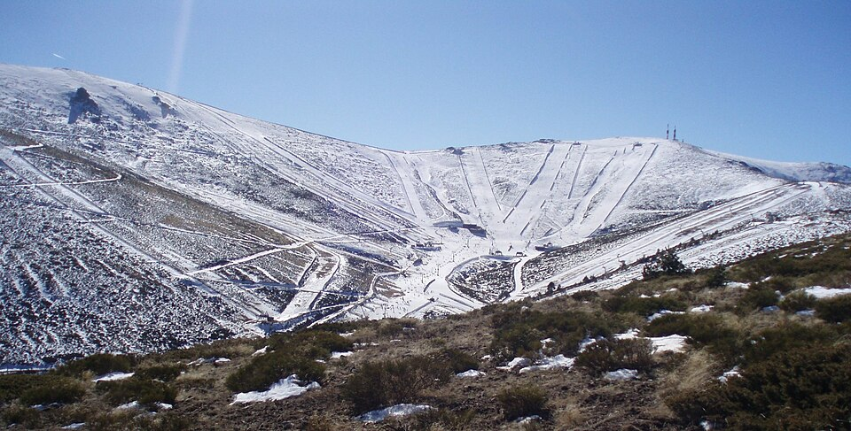
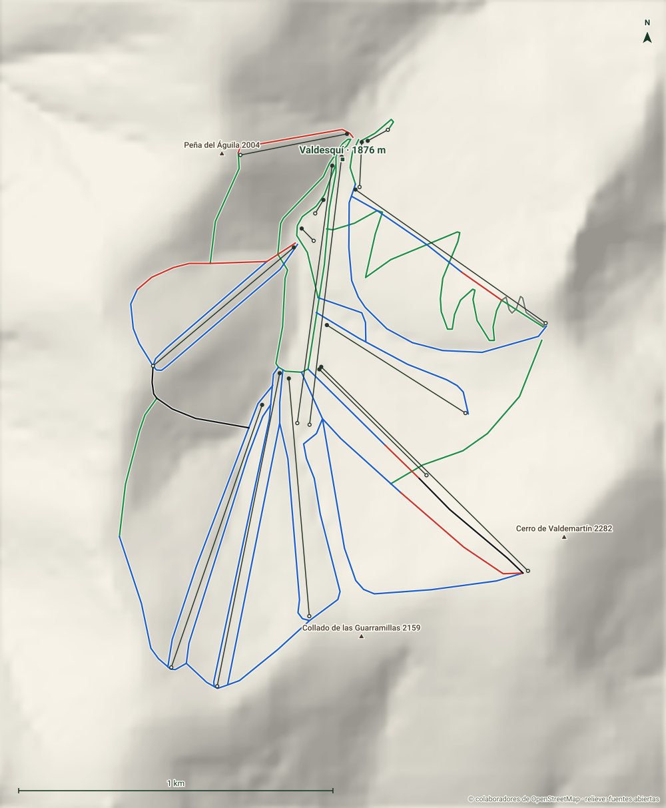

Valdesquí
Sierra de Guadarrama · Madrid
- Pistas
- 21 km
- 40 trazados
- Cota máxima
- 2263 m
- mínima 1870 m
- Desnivel
- 393 m
- esquiable
- Remontes
- 15
- 6 telesillas · 7 telesquís
La estación de Madrid: un circo abierto en la Sierra de Guadarrama, junto al puerto de Cotos, a poco más de una hora de la capital.
Foto: Miguel303xm · CC BY 3.0 · Wikimedia Commons

Hoy
Valdesquí ahora mismo
Estado de pistas y remontes según el último parte publicado, y las webcams de la estación.
Webcams
Estado y webcams de Infonieve.es, a partir de los partes y cámaras de cada estación. Antes de salir, confírmalo en la web oficial.
Próximos 7 días
Nieve y tiempo previstos
Previsión para la cota alta (2263 m) y la base (1870 m).
Previsión de modelos meteorológicos de Open-Meteo (CC BY 4.0). Es previsión, no observación: lo que hay abierto hoy está en el estado de pistas.
Plano
Plano de pistas
Pasa el cursor o toca una pista o un remonte para ver su nombre, longitud y desnivel.
Trazados: © colaboradores de OpenStreetMap (ODbL). No es el plano oficial de la estación ni refleja aperturas.
Mapa 3D
Valdesquí en tres dimensiones
Relieve real, fotografía aérea, sol y sombras, viento e inclinación. Se carga solo cuando lo pides porque pesa.

Pantalla completa
Recomendado con wifi. En móvil, el mapa completo va mejor en la app.
Pistas
40 pistas, 21 km
La más larga con nombre es Las Zetas (1,5 km, verde).
VerdeMuy fácil
13 pistas · 5,7 km
Ver nombres
- Las Zetas 1,5 km
- Pradera I 0,8 km
- La Travesía 0,7 km
- Pradera IV 0,5 km
- Cuerda Larga 0,5 km
- Pradera III 0,5 km
- Paso Palomas 0,4 km
- Pradera II 0,4 km
AzulFácil
18 pistas · 11,9 km
Ver nombres
- Quinta Avenida 1,2 km
- Guarramillas 1,1 km
- Bola II 1,1 km
- Tubo Collado 1,1 km
- Bola I 1 km
- Estadio 1 km
- Noruego II 0,6 km
- Cuerda Noruego 0,5 km
- Ecologica 0,4 km
- Noruego I 0,3 km
RojaIntermedia
6 pistas · 1,7 km
NegraDifícil
2 pistas · 0,9 km
Ver nombres
- El Muro 0,4 km
- Solana 0,4 km
Sin clasificarSin dificultad en los datos
1 pistas · 0,3 km
Remontes
15 remontes
El de mayor desnivel: Valdemartín I, 311 m.
| Remonte | Tipo | Longitud | Desnivel | Llegada |
|---|---|---|---|---|
| Valdemartín I | Telesquí | 924 m | 311 m | 2263 m |
| Bola del Mundo | Telesilla | 1015 m | 267 m | 2211 m |
| Tubo | Telesilla | 884 m | 253 m | 2212 m |
| Collado | Telesilla | 739 m | 223 m | 2119 m |
| De la Fuente | Telesilla | 759 m | 216 m | 2160 m |
| Loma del Noruego | Telesquí | 586 m | 164 m | 2066 m |
| Valdemartín II | Telesquí | 479 m | 143 m | 2095 m |
| Piornal | Telesquí | 523 m | 132 m | 2069 m |
| Peña del Águila | Telesquí | 346 m | 120 m | 1991 m |
| Del Arroyo | Telesilla | 858 m | 107 m | 1982 m |
| Pepe Arias | Telesilla | 826 m | 102 m | 1981 m |
| Escuela II | Cinta | 144 m | 25 m | 1895 m |
| Park Center | Telecuerda | 55 m | 9 m | 1906 m |
| Escuela I | Cinta | 72 m | 7 m | 1878 m |
| Escuela III | Telesquí | 50 m | 4 m | 1890 m |
Longitud en planta y desnivel sobre el modelo de relieve. No incluye horarios ni estado de apertura.
Guía práctica
Antes de ir a Valdesquí
Cómo llegar
Sierra de Guadarrama, Madrid. Coordenadas del dominio: 40,7978, -3,9713.
Ver en OpenStreetMap · Cómo llegar en coche
En invierno comprueba el estado de la carretera y si hacen falta cadenas.
El terreno
- Base: Valdesquí, 1876 m
- Cerro de Valdemartín, 2282 m
- Alto de las Guarramillas (Bola del Mundo), 2265 m
- Dos Castillas, 2179 m
- Collado de las Guarramillas, 2159 m
Enlaces oficiales
Forfaits, horarios y aperturas cambian durante la temporada: los publica la estación.
Valdesquí sin cobertura
Descarga este mapa en la app para Android y úsalo en pistas aunque no haya red.